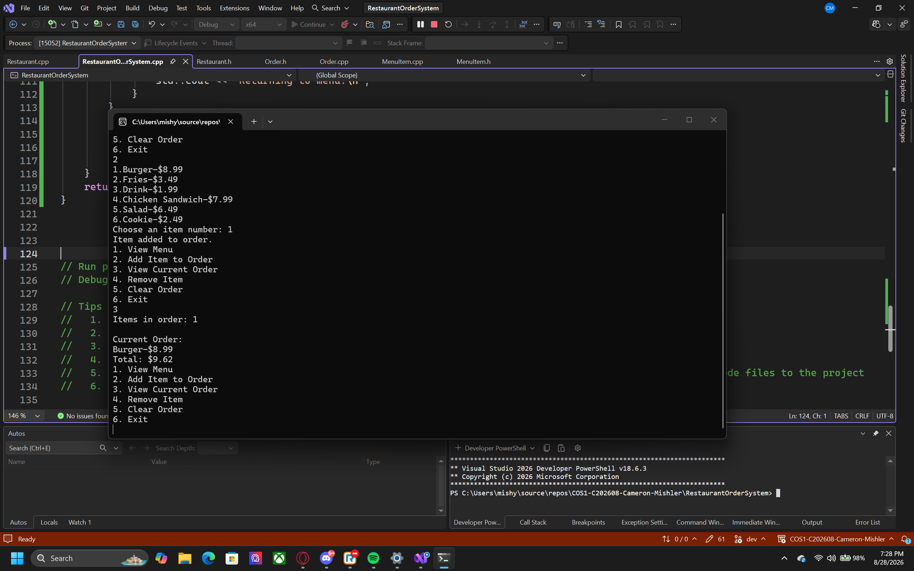

Languages
C++, HTML, CSS
Game Development Student
I'm a game development student learning C++ and software development. I enjoy building interactive programs and improving my programming skills through hands-on projects.
About Me
I'm a game development student focused on improving my programming skills and learning how to build better software. I enjoy working on interactive projects and solving problems through code. Right now I'm improving my C++, debugging, and object-oriented programming skills.
C++, HTML, CSS
Visual Studio, Git, GitHub
Object-oriented programming, classes, vectors, loops, debugging, and problem solving
Featured Work
This project shows the C++ skills I developed during this course and how I improved the program over multiple milestones.

C++ Console Application
A C++ restaurant ordering program that lets users view a menu, add and remove items, view their current order and total, clear the order, and exit through an interactive menu.
One challenge was adding new features without breaking the menu flow. I fixed issues by testing each change as I added it. This project helped me improve with C++, classes, vectors, debugging, and organizing a program.